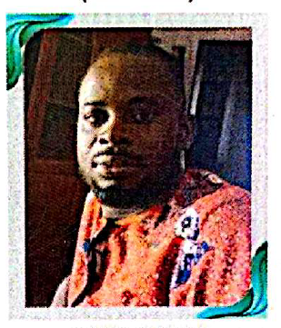
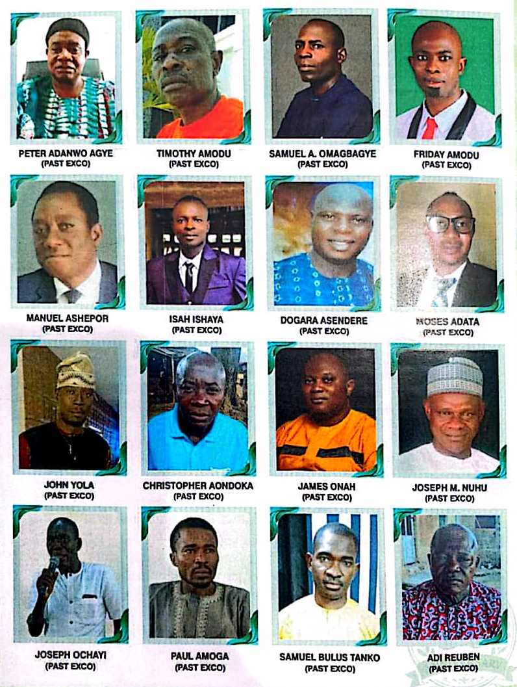
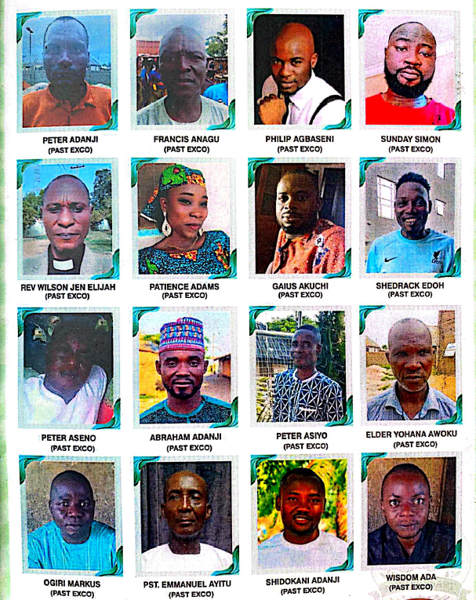

Faith that feels like home, not homework.
His Second Tenure, Elder Dogara Sendere came up with so many factual and prospective points that has brought us to the level where we are today, not only our LCC here in Wailamayo, but the entire BIRCCAN Churches. He introduced the idea of organizing meetings with the denominational (LCC) Leaders like James Onah, Abraham Adanji, Isa Ishaya, Pastor Emmanuel .A. Ayitu, Timothy Amodu, who are the Pilots of all the LCC English Service Section, so as to effect the Spirit of harmony and uniformity among the English Section cutting across all the LCC, he was made the Chairman of that group, though his idea was achieved and it has helped a lot in all the activities of the English Section.
Elder Abraham Adanji was still the Secretary of Elder Dogara Sendere during his Second Tenure. During the reign of Elder Dogara Asendere, the Church Youth Fellowship was revived. The movement was ignited by Bro. Emmanuel Peter, Bro. Isa Ishaya, Bro. Jonah who left as a result of job transfer.
The Youth grew in Service and commitment. The current Bible Study/Prayer Meeting currently now is as a result of the rise of the Church Youth. The Youth had a fund raising which leads to opening of Bookshop and Fish Pond, which later collapse due to inadequate knowledge to manage the Shop and Business. The First Youth President was Bro. Isa Ishaya and his Secretary as at then was Bro. Emmanuel Peter.
In the Year 2019 - 2021, Elder Timothy Amodu was made the Chairman of the English Service Section again, with the likes of Elder Abraham Adanji, Pastor Emmanuel.A. Ayitu, Elder Gaius Akuchi, Elder Peter Osewiyo who formed the Cabinet under his Chairmanship. The Secretary of the Section during this time was Elder Gaius Akuchi and during this time a lot of things happened for the betterment of the Section. Though, activities like Cooperate Prayers, Praying in tongues was strongly opposed by the Council of Elders of the Mother Church that this practice of (Cooperate/Tonguing) is not indoctrinated in the Church Constitution and this led to the Suspension of the group like Royal Priesthood (R.P.H), alongside other individuals who were tagged as Rebellious Youths because of their refusal to adhere to the Constitution that is guiding the Church.
For this reasons, the Section at a point lost some of Her Young Men & Women to other Churches, efforts were put in place by the Elders of the English Section to see that the Youths who were suspended back then will come to a compromise with the Mother Church Elders, that they will keep to the ethics guiding the Church but they were reluctant and their absence in the Church handicapped some activities during Church Service until the Tenure of Elder Timothy elapse.

In the year 2021 - 2023, Elder Gaius Akuchi who is the Secretary of the past Tenure was made the Chairman of the Section (English Service) and his Cabinet Members are Elder Abraham Adanji as the Secretary, Pastor Emmanuel .A. Ayitu, Elder Peter Osewiyo. This Tenure did all things been possible to do so as to reverse the Suspension that was pronounced by the Council of Elders of the Mother Church, in the Tenure of Elder Timothy Amodu on the group known as the Royal Priesthood (R.P.H) and it was achieved but conditions was given by the Elders of the Mother Church that each person belonging to this group must come before the Congregation of the Church and attest to the fact that he or she will keep to the Rules or Doctrine guiding the Church.

The Elders of the English Service Section took this upon themselves back then that individuals who are affected should come and do as demanded by the Church Council of Elders, so that we can continue from where we stopped but nobody showed up. Though, Service still continued as usual till the Tenure ended but before the Chairman leave the office, he conducted election for the Elders that are to take over after him. The likes of Elder Emmanuel Agye, Elder Adah Wisdom, Elder Frank Awepa, Elder Markus Emmanuel, were elected, through open balloting and among them that were elected, Elder Emmanuel Agye was made Chairman of the Section in the Year 2023 - 2025.
This Tenure is one of the outstanding Tenure among all. The Chairman Elder Emmanuel Agye and his entourage sacrificially took some responsibilities in the Section to see that the change they wanted will be effected via Leadership Training, merging the Sub-Groups in the Section to become just one as the Choir or Singing Group in the Section. The Chairman himself is the Custodian of the Drama Group under the Umbrella of the Royal Priesthood (R.P.H), which was resuscitated by the Chairman Elder Emmanuel Agye, he is also the Leader and Guardian of the Drama Group.
His presence and Leadership quality has been of good influence and inspiration to the Younger Generation of the Section and his quality has really helped in the Section, in fact a lot of changes have come to stay in the Section.
The Leadership of Elder Emmanuel Agye comprises of Elder Frank. A. Awepa, Elder Abraham Adanji, Elder Adah Wisdom, Elder Markus Emmanuel, Elder Peter Osewiyo, Pastor Emmanuel. A. Ayitu, Pastor Isa Ishaya, Apostle Friday .A. Amodu. The above names been listed are the present Pioneers of the Leadership System of the English Service Section, the Secretary of the present Leadership is Elder Frank.A. Awepa who is so outstanding in doing his job as the Secretary of the Section presently.
PHOTO GALLERY OF PAST & PRESENT EXCOS

